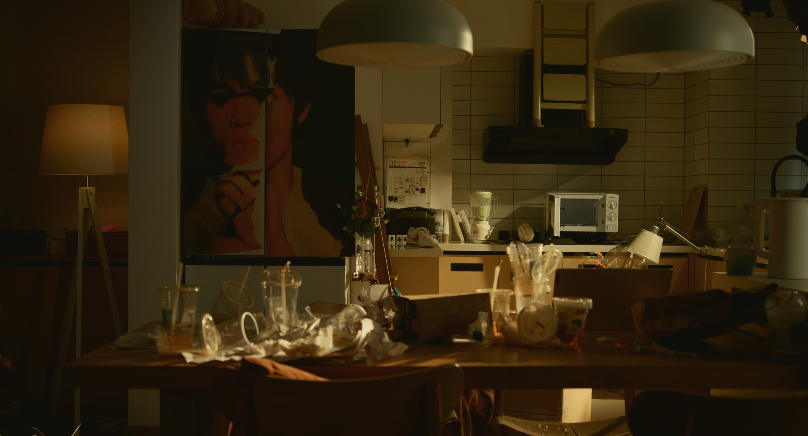

核心优势
深厚理论底蕴
具备严谨的学术能力，擅长从文学与电影理论出发，赋予角色更深度的社会性与心理逻辑。
视听叙事能力
熟练视频剪辑与后期，能独立完成过场动画的分镜设计与预演，将文本无缝转化为视听语言。
敏锐品类洞察
丰富的3A主机游戏体验，对注重电影化叙事的动作冒险类游戏有直观的拆解能力。
短片创作

3mby
焦虑公园（后期中）
导演 / 编剧 / 剪辑
“头脑特工队”，但是主角是一个焦虑的青年男性。

击云造雨
导演 / 编剧 / 剪辑
一位中年女性经过了她生命里最跌宕起伏的23分钟。

还有多久到现在？
导演 / 编剧 / 剪辑
一个男孩向一位女孩搭讪，他声称自己能够预测未来。
剧本创作
🎢 焦虑公园
超现实
喜剧
剧本入选北京电影学院2023级研究生拔尖人才实验班毕业作品
明天是主人公生命中最重要的一天了，高压之下，他愈发脆弱，然而从自来水管到平常熟识的打印店老板都携起手来与他做对，层层重压下，他逐渐走向崩溃，这时，过去与未来，现实与虚构的界限被撕裂，情况逐渐滑稽起来。
游戏与影视阅历
100+
Steam/主机库
4000h+
总游玩时长
2000+
阅片量/豆瓣标记
过硬
跨媒介叙事素养
游戏品类图谱
电影化叙事
最后生还者 1&2
荒野大镖客2
战神：诸神黄昏（全成就）
死亡搁浅 1&2
赛博朋克2077
...
运营型网游
战地风云系列
英雄联盟
...
独立游戏
哈迪斯
极乐迪斯科
隐迹渐现
...
观影偏好如何赋能叙事构建
经典好莱坞：结构的基石
如何在有限的制作周期和制片厂对创意的百般限制下，在固定的类型情节中创作出峰回路转的叙事佳作。
70s 类型片：视听的边界
导演作为创作中心的巅峰，他们为古典类型叙事赋予现代锋芒，提醒我们类型叙事在个人风格的主导下可能达到的绝佳效果。
新千年之后的作者导演：叙事的驱动
PTA、塔伦蒂诺、芬奇、艾斯特、NWR...他们即是传统叙事的延续，也是反叛。通过关注当下，让叙事成为当代社会的回声。